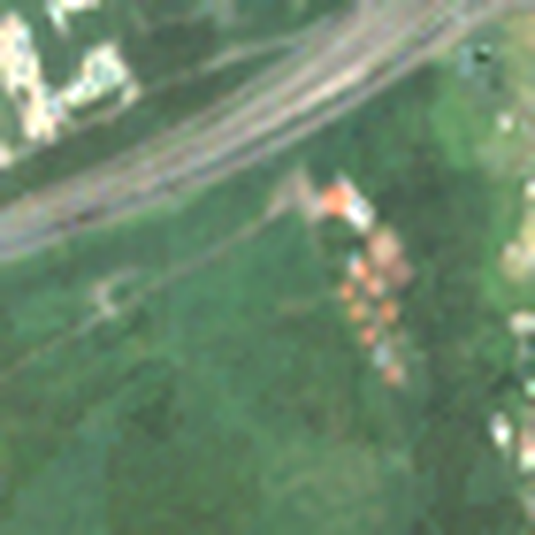
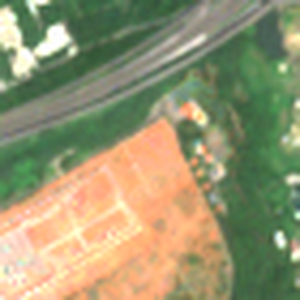
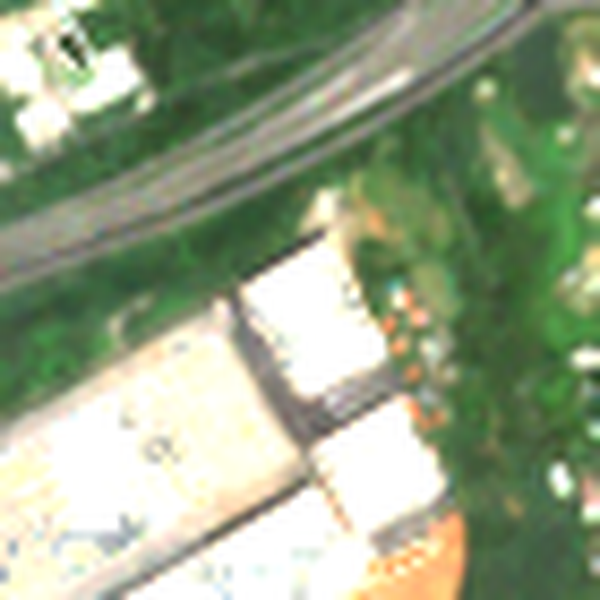
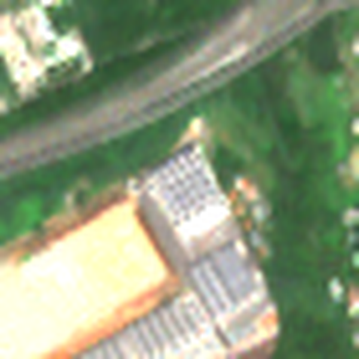

太陽光電到底砍了多少樹？——用衛星照片算給你看
白話版成果說明。數字皆為 2018（基準年）到 2025 的衛星判讀結果。 下載簡報（PowerPoint）
2019–2025 新增的太陽能板
3,866 公頃
≈ 149 座大安森林公園
其中原本是樹林的
94 公頃
≈ 3.6 座大安森林公園，約佔 2.4%
原本是農地 + 魚塭鹽田的
3,113 公頃
約佔 81%
新增太陽能板「蓋之前是什麼」：
■ 水體（魚塭/鹽田/埤塘） 1,201 公頃、■ 農地/低植生 1,912 公頃、■ 裸露地/建物 659 公頃、■ 樹冠（砍樹光電） 94 公頃
「公頃」有多大？
1 公頃 = 100 公尺 × 100 公尺 = 10,000 平方公尺，約 3,025 坪、1.03 甲，差不多是 1.4 個標準足球場。
台北的大安森林公園約 26 公頃，本頁常用它來比較。
1. 為什麼要做這件事？
台灣近年大力推動太陽光電，2018 年全國光電裝置容量約 2.7 GW，到 2025 年已超過 15 GW。 新聞上時常看到「光電砍樹」「農地種電」「漁電共生」的爭議，但大多是個案，很少有人回答一個簡單的問題： 全台灣這幾年新蓋的太陽能板，原本到底是什麼地？砍了多少樹？
農業部農村發展及水土保持署的 BigGIS 巨量空間資訊系統 已經示範如何用 Sentinel-2 衛星影像、以植生指標（NDVI）判斷森林與裸露地的變化。本站沿用同一套想法， 把它擴大到全台灣、每一年，並加上「辨認太陽能板」這一步。
2. 怎麼做的？（白話版）
- 每年拍一張「沒有雲」的台灣照片。歐洲太空總署的 Sentinel-2 衛星每 5 天拍一次台灣，但台灣多雲。 我們把每一年最清楚的 15 次照片疊起來，每個位置取「最常見的樣子」，拼出一張全台無雲照片。
- 把台灣切成 10 公尺 × 10 公尺的小格子（約 3.7 億格），讓電腦判斷每一格是：樹、農地 / 草地、水、裸地 / 建物，還是太陽能板。
- 樹：一整年都很「綠」（植生指標高，連休耕季節也不掉）。
- 太陽能板：在衛星的「短波紅外線」特別亮、在「近紅外線」特別暗，和魚塭、房屋都不一樣。我們用台南七股、彰濱工業區等已知案場校正。
- 一年一年追蹤每一格。某一格第一次變成太陽能板、而且隔年還是，就算「這年蓋好」； 再往回看它蓋之前幾年是什麼：多數年份是樹 → 算「砍樹光電」；有 1/3 以上年份是水 → 魚塭 / 鹽田；其餘看是農地還是裸地較多。
- 和政府資料對照。用經濟部能源署公開的光電案場清單、裝置容量統計，以及山坡地、國有林、地形資料檢查結果。
3. 發現了什麼？
- 新增的太陽能板約一半蓋在農地上（1,912 公頃，≈ 74 座大安森林公園）， 約三成蓋在魚塭、鹽田、埤塘等水面（1,201 公頃）。
- 原本是樹林的只有約 94 公頃（≈ 3.6 座大安森林公園），佔新增的 2.4%。 如果把果園、檳榔園、竹林也算成「樹」，約 180 公頃；再寬鬆到「任何植被」也只有 405 公頃。 所以「光電大規模砍樹」在全台尺度上並不成立，但確實有局部案例。
- 砍樹光電集中在花蓮與屏東。最大的一處在花蓮鳳林、光復一帶的平地造林地（約 34 公頃）； 屏東則分散在佳冬、車城、恆春、獅子等地。
- 砍樹光電多數在平地，不在山坡地。新增光電中位於山坡地的有 394 處、 約 225 公頃，其中原為樹林的約 18 公頃； 平地原為樹林的約 76 公頃。
- 縣市差異很大：台南、彰化、嘉義、雲林新增最多；彰化大多是魚塭與濱海水面（彰濱），嘉義、雲林大多是農地。
- 另外，2019–2025 全台約有 8,014 公頃樹林「明確消失」（變成裸地、建物、水或光電）， 其中絕大多數與光電無關，而是颱風崩塌、開發、伐採等，例如 2025 年花蓮馬太鞍溪一帶。
先砍樹、空窗幾年、再蓋光電？
有些地方是先把樹砍掉，荒置或短期耕作幾年，才蓋太陽能板。上面「原本是樹林」的 94 公頃， 只算「蓋之前多數年份是樹」的格子，空窗 1–2 年的會被算進去，但空窗更久的不會。我們另外逐年追蹤每一格，結果如下（逐層累加）：
| 納入的情況 | 面積 | 累計 |
|---|---|---|
| 完工前多數年份是樹 本站主要數字；含砍樹後空窗 1–2 年 |
94 公頃 | 94 公頃 ≈ 3.6 座大安森林公園 |
| ＋ 先砍樹、空窗多年再蓋 ≥ 2 年是樹，之後到完工都不是樹；空窗多為 3–6 年；混有「為了蓋工廠而砍、屋頂才裝光電」的案例 |
32 公頃 | 127 公頃 ≈ 4.9 座大安森林公園 |
| ＋ 2018 年以前就已砍除 分析年份從未是樹，只有參考年 2017 是樹 |
17 公頃 | 144 公頃 ≈ 5.5 座大安森林公園 |
| ＋ 只有 1 年被判為樹 證據弱，可能是果園 / 作物被誤判的雜訊 |
77 公頃 | 220 公頃 ≈ 8.5 座大安森林公園 |
- 「先砍樹、空窗多年再蓋」約 32 公頃，空窗多為 3–6 年；空窗期間多半長回草或短期耕作（低植生 58.9%），真正裸露的只佔 23.8%。
- 但這一類混有不同原因。例如下面桃園這塊地：2018 年是樹林，2020 年整地，2022 年蓋了大型工廠，2024 年工廠屋頂才裝上太陽能板——樹是為了蓋工廠砍的，不是為了光電。
- 就算把所有可能的情況都算進去，砍樹光電最多約 220 公頃，仍不到新增光電的 6%。

2018：樹林

2020：整地

2022：蓋工廠

2024：屋頂光電
桃園（24.931, 121.186）本研究 Sentinel-2 年度合成影像，約 700 × 700 公尺。
4. 這些數字可信嗎？
- 和能源署公開的 419 個大型（2 MW 以上）光電案場比對：以鄉鎮為單位， 案場土地面積與本站偵測面積的相關係數 0.792，趨勢相當一致；全台偵測面積的成長曲線也和累計裝置容量同步。
- 用國土測繪中心的航空照片抽查大型案場，案場內約 75–90% 的格子有被抓到。
- 抽查「原為樹林」的案場，多數確實是樹林中蓋起太陽能板；誤判多出現在最後一年（2025）才出現、還沒有隔年確認的案例，網站上會標示「待確認」。
5. 研究限制（請務必一起看）
- 看不到小型與屋頂型光電。衛星一格 10 公尺，0.2 公頃以下的案場、住家與工廠屋頂大多抓不到，所以光電面積是「下限」。
- 「樹」的定義會影響結果。本站採嚴格定義（整年都很綠的木本植被，且蓋之前多數年份是樹），果園、檳榔、竹林可能被算成農地， 砍樹後空窗多年才蓋的也不算；因此另外提供寬鬆定義與逐層累加的數字（最多約 220 公頃）。
- 砍樹不一定是為了光電。衛星只看得到「以前是樹、後來是太陽能板」，看不到砍樹的原因；例如砍樹蓋工廠、之後屋頂裝光電，也會被算進較寬的層級。
- 2017 年只當參考。那年只有一顆 Sentinel-2 衛星，照片少、樹林會被低估，所以統計從 2018 年開始。
- 2025 年的新案場還沒有隔年確認，誤判機率較高。
- 無法逐案對到政府案場。能源署清單只有地號，沒有公開座標，所以只能以鄉鎮比對。
- 地形用的是 30 公尺的數值地表模型，山坡地是依法定定義（標高 100 公尺以上或坡度 5% 以上）推估，非官方劃定範圍。
6. 名詞小辭典
- 公頃
- 面積單位，100 m × 100 m = 10,000 平方公尺 ≈ 3,025 坪 ≈ 1.03 甲。
- Sentinel-2
- 歐洲太空總署的免費地球觀測衛星，解析度 10 公尺，每 5 天拍一次台灣。
- NDVI（植生指標）
- 用紅光與近紅外光計算「有多綠」，越接近 1 植物越茂盛；BigGIS 也用它判斷森林與裸露地。
- 基準年
- 2018 年。之前就存在的太陽能板不算「新增」。
- 漁電共生
- 在魚塭上方或旁邊架設太陽能板，養殖與發電並行；本站歸在「水體」前身。
- MW（百萬瓦）
- 發電設備容量。地面型光電大約每 1 MW 需要 1–1.7 公頃土地。